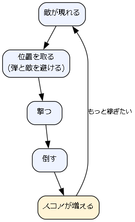
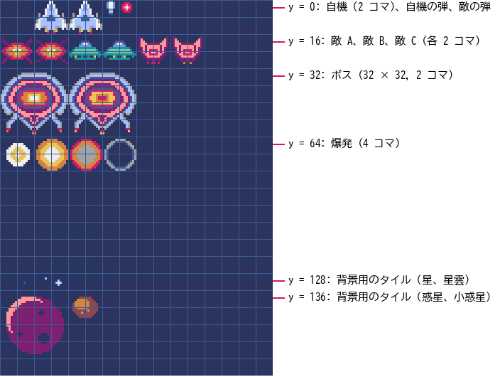

2. ゲームの企画
いきなりコードを書き始めると、作りたいものが途中でぼやけたり、規模が膨らんで完成しなかったりする。この章では、作るゲームの内容を先に決め、必要な素材と作業の順番を洗い出す。
2.1. 企画で決めること
企画とは、「どんなゲームを、どこまで作るか」を決める作業である。小さなゲームなら、次の 5 つを決めれば十分である。
項目 |
内容 |
|---|---|
コンセプト |
ゲームの面白さを一言で表したもの。迷ったときの判断基準になる。 |
遊びの核 |
プレイヤーが何度も繰り返す行動の流れ。コアループとも呼ぶ。 |
勝ち負けの条件 |
何をしたら成功で、何をしたら失敗か。 |
操作 |
どのキーやボタンで何をするか。 |
画面 |
画面の大きさと、どのような画面（シーン）があるか。 |
この中で最も大切なのは遊びの核である。遊びの核が面白くなければ、絵や音をどれだけ作り込んでも面白いゲームにはならない。逆に、遊びの核が面白ければ、四角形と円だけでも遊べる。第 6 章で図形だけのプロトタイプを作るのは、遊びの核を早い段階で確かめるためである。
2.2. 小さく作る
初めてのゲームでは、作るものを思い切って絞る。「作らないもの」を先に決めておくと、作業の途中で機能を足したくなったときに踏みとどまれる。本書の題材ゲームでは、表 2.2 のように範囲を決めた。
作るもの |
作らないもの |
|---|---|
1 種類の自機と 1 種類のショット |
パワーアップ、ボム、複数の自機 |
3 種類の敵と 1 体のボス |
ステージごとに異なる敵や地形 |
時間で進むステージ（ボスを倒すと難易度が上がって繰り返す） |
複数のステージとエンディング |
スコアとハイスコアの保存 |
オンラインランキング |
キーボードとゲームパッドでの操作 |
キー設定の変更画面 |
「作らないもの」のいくつかは、第 10 章で拡張のアイデアとして取り上げる。完成させてから足せばよい。
2.3. 題材ゲームの企画書
企画の内容を 1 枚にまとめたものを企画書と呼ぶ。企画書は人に見せるためだけでなく、自分が迷わないために書く。表 2.3 が本書の題材ゲームの企画書である。
タイトル |
COSMO RUSH |
ジャンル |
縦スクロールシューティング |
コンセプト |
数分で遊べる、撃って避ける爽快感 |
遊びの核 |
現れる敵を撃って倒し、敵の体当たりと弾を避ける。倒した敵の数と種類に応じてスコアが増える。 |
勝ち負けの条件 |
残機は 3 機。敵や敵の弾に当たると 1 機減り、0 になるとゲームオーバー。各ステージの開始から 45 秒後にボスが現れ、倒すとステージクリアとなって、敵が増えた次のステージが始まる。ハイスコアを目指して遊ぶ。 |
操作 |
矢印キー（または WASD キー、ゲームパッドの方向パッド）で移動する。Z キー（またはスペースキー、ゲームパッドの A ボタン）を押している間、弾を連射する。 |
画面 |
幅 128、高さ 160 ピクセルの縦長の画面。30 fps。タイトル画面、プレイ画面、ゲームオーバー画面の 3 つ。 |
登場するもの |
自機、自機の弾、敵 3 種類（まっすぐ進む敵 A、揺れながら進む敵 B、止まって狙い撃ちする敵 C）、敵の弾、ボス、爆発、スクロールする宇宙の背景 |
遊びの核を図にすると図 2.1 のようになる。プレイヤーはこの輪を何度も回りながら、少しずつ上達していく。

図 2.1 題材ゲームの遊びの核（コアループ）
2.4. 画面遷移を設計する
ゲームはいくつかの画面（シーン）からできている。それぞれのシーンと、シーンが切り替わるきっかけを図にしたものを画面遷移図と呼ぶ。題材ゲームの画面遷移図を図 2.2 に示す。
![digraph scenes {
rankdir=LR;
node [shape=box, style="rounded,filled", fillcolor="#eef3ff", fontsize=11];
edge [fontsize=10];
start [shape=point, width=0.15];
title [label="タイトル画面"];
subgraph cluster_play {
label="プレイ画面"; fontsize=11; style="rounded"; color="#888888";
normal [label="通常\n(敵が出現する)"];
warning [label="警告"];
boss [label="ボス戦"];
clear [label="ステージクリア"];
}
over [label="ゲームオーバー画面"];
start -> title;
title -> normal [label="キーを押す"];
normal -> warning [label="43 秒経過"];
warning -> boss [label="2 秒後"];
boss -> clear [label="ボスを倒す"];
clear -> normal [label="4 秒後\n(難易度が上がる)"];
normal -> over [label="残機が 0", style=dashed];
boss -> over [label="残機が 0", style=dashed];
over -> title [label="キーを押す"];
}](_images/graphviz-e2b4504a245a1e97f70177c1636f7ce70a0e682b.png)
図 2.2 題材ゲームの画面遷移図
画面遷移図を描いておくと、「ゲームオーバー画面からはどこへ戻るのか」「ボス戦の途中でやられたらどうなるのか」といった抜けに早く気付ける。この図は第 7 章でシーンを実装するときにそのまま使う。
2.5. 必要な素材を洗い出す
企画書から、必要な素材（グラフィックスとサウンド）を洗い出す。Pyxel ではイメージバンクの大きさが限られるので、どの絵をどこに置くかも先に決めておく。
2.5.1. グラフィックス
題材ゲームで使う絵を表 2.4 にまとめる。「位置」はイメージバンク 0 での左上の座標である。
名前 |
大きさ |
コマ数 |
位置（イメージバンク 0） |
|---|---|---|---|
自機 |
16 × 16 |
2 |
(16, 0), (32, 0) |
自機の弾 |
8 × 8 |
1 |
(48, 0) |
敵の弾 |
8 × 8 |
1 |
(56, 0) |
敵 A |
16 × 16 |
2 |
(0, 16), (16, 16) |
敵 B |
16 × 16 |
2 |
(32, 16), (48, 16) |
敵 C |
16 × 16 |
2 |
(64, 16), (80, 16) |
ボス |
32 × 32 |
2 |
(0, 32), (32, 32) |
爆発 |
16 × 16 |
4 |
(0, 64), (16, 64), (32, 64), (48, 64) |
背景のタイル |
8 × 8 |
－ |
(0, 0), (8, 128) ～ (40, 128) など |
タイトルロゴ |
121 × 19 |
1 |
イメージバンク 1 の (0, 0) |
この配置をイメージバンク上で見ると図 2.3 のようになる。同じ大きさの絵を同じ行に並べ、アニメーションのコマを横に並べておくと、プログラムからコマを選ぶ計算が簡単になる。

図 2.3 イメージバンク 0 の配置（上半分を拡大。格子は 8 ピクセルごと）
左上の (0, 0) から 16 × 16 ピクセルの範囲は、わざと空けてある。タイルマップのすべてのマスは、最初はイメージバンクの (0, 0) にある 8 × 8 ピクセルの絵（タイル (0, 0)）を指している。(0, 0) に絵を置くと、タイルマップを作り始めたときに、その絵がマップ全体に敷き詰められて見えてしまう。Pyxel Editor のマニュアルも、(0, 0) を空けておくことを勧めている。
2.5.2. サウンド
効果音と BGM も同じように洗い出し、サウンドの番号を割り当てる（表 2.5）。Pyxel は同時に 4 つの音しか鳴らせないので、どのチャンネルで鳴らすかも決めておく。本書では、BGM にチャンネル 0 ～ 2 を、効果音にチャンネル 3 を使う。ただし、ゲームオーバーの音は BGM を止めてから鳴らすので、チャンネル 0 を使う。
番号 |
用途 |
鳴らすチャンネル |
|---|---|---|
サウンド 0 |
自機の弾を撃つ音 |
3 |
サウンド 1 |
敵の爆発音 |
3 |
サウンド 2 |
自機がやられた音 |
3 |
サウンド 3 |
ゲーム開始の決定音 |
3 |
サウンド 4 |
ボス出現の警告音 |
3 |
サウンド 5 |
ゲームオーバーの音 |
0 |
サウンド 6 |
弾が敵に当たったが倒せなかったときの音 |
3 |
サウンド 10、11 |
タイトル画面の BGM の部品（メロディ、ベース） |
－ |
サウンド 20 ～ 24 |
プレイ画面の BGM の部品（メロディ、ベース、ドラム） |
－ |
ミュージック 0 |
タイトル画面の BGM |
0、1 |
ミュージック 1 |
プレイ画面の BGM |
0 ～ 2 |
2.6. 作業の順番を決める
ゲーム制作の作業は、おおまかに次の順番で進めると手戻りが少ない。
プロトタイプ：四角形や円などの図形だけで、遊びの核を動かしてみる。
素材の制作：遊べることを確かめてから、絵と音を作る。
組み込み：プロトタイプの図形を素材に置き換え、シーンや演出を加える。
調整：何度も遊び、敵の数や速さなどの数値を直す。
公開：ほかの人が遊べる形にまとめて公開する。
素材を先に作り込むと、遊んでみてから仕様を変えたときに、その素材が無駄になる。本書では、Pyxel Editor の使い方を先にまとめて説明するために、素材を作る章（第 4 章、第 5 章）をプロトタイプの章（第 6 章）より前に置いた。自分でゲームを作るときは、第 6 章の進め方を先に行うとよい。
2.7. まとめ
企画では、コンセプト、遊びの核、勝ち負けの条件、操作、画面を決める。最も大切なのは遊びの核である。
「作らないもの」を先に決め、小さく作って完成させる。
画面遷移図と素材の一覧を作り、イメージバンクの配置とサウンドの番号を先に決めておく。